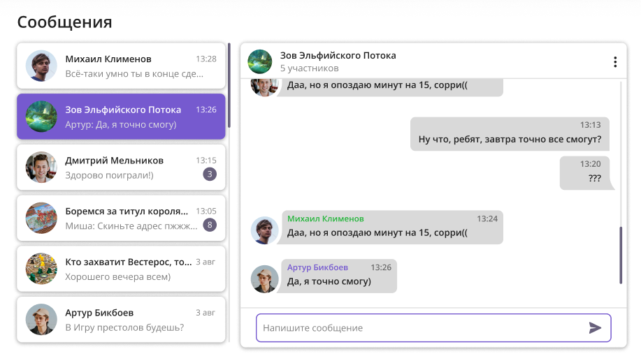
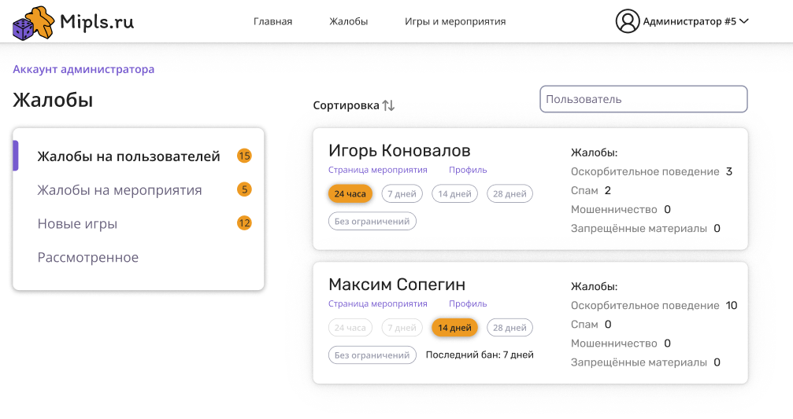
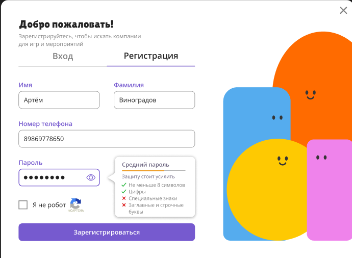

Задача
Помочь людям находить компанию для игры
Идея МИПЛС началась с простой ситуации: человек хочет поиграть, но ему не с кем собрать команду. Я хотел сделать сервис, в котором можно найти других участников для настольных, компьютерных и спортивных игр.
Чтобы довести идею до работающего продукта, нужно было продумать пользовательские сценарии, организовать разработку, собрать команду и запустить сервис для пользователей.
Продукт
Отвечал и за сценарии, и за интерфейс
Я определял приоритеты продукта, планировал работы и сам занимался UX/UI-дизайном. Обсуждал с командой, как должны работать основные сценарии поиска компании для игры, и переводил продуктовые решения в задачи для разработки.
Параллельно анализировал рынок и конкурентов, чтобы понимать, какие задачи важнее для пользователей и что делать в следующую очередь.
Интерфейс
Как выглядел сервис
Помимо поиска игр и мероприятий, в МИПЛС были переписка участников, регистрация и инструменты модерации. Ниже — экраны работающего сервиса. Нажмите на изображение, чтобы рассмотреть его целиком.



Управление
Держал вместе команду, подрядчиков и бюджет
Я координировал двух разработчиков и маркетолога, распределял зоны ответственности и контролировал выполнение работ. Для дополнительного функционала привлекал внешних подрядчиков: выбирал исполнителей, закупал услуги, вёл договоры и акты.
Кроме продукта и разработки, отвечал за бюджет и движение денег. Так решения о новых функциях приходилось соотносить с возможностями команды и стоимостью реализации.
Результат
Сервис был разработан и запущен
Мы довели МИПЛС от идеи до онлайн-сервиса, которым могли пользоваться люди. На развитие проекта удалось привлечь более 1 млн ₽ инвестиций.
Для меня это был опыт управления ИТ-продуктом целиком: я отвечал за то, что создаём для пользователя, как работает команда и за счёт каких ресурсов проект развивается.